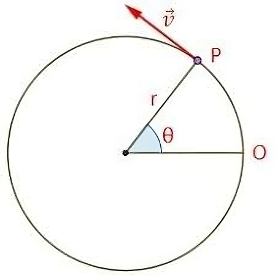

Movimiento Circular y Segunda Ley de Newton
Movimiento Circular Uniforme
El movimiento circular es un movimiento periódico, en el cual un objeto se mueve a lo largo de una trayectoria circular. Este movimiento puede ser uniforme o no uniforme, dependiendo de si la velocidad angular es constante o no.

Definiciones
Aceleración Centripeta o Radial
La aceleración centrípeta es la aceleración hacia el centro de la trayectoria circular, y se define como: \[ a_r = \frac{v^2}{r} \]
Aceleración Total
La aceleración total es la raíz de la suma de la aceleración centrípeta y la aceleración tangencial, y se define como: \[ a = \sqrt{a_t^2 + a_r^2}\]
Velocidad Angular
La velocidad angular es la razón de cambio del ángulo (en radianes) con respecto al tiempo, y se define como: \[ \omega = \frac{\theta}{t}\]
Velocidad Tangencial
La velocidad es la velocidad del objeto si se dejara de aplicar la fuerza centrípeta, y se define como: \[ | \vec{v_t} | = \frac{2\pi r}{T} = \omega r\]
Notación Vectorial
La posición de un objeto en movimiento circular se puede describir mediante un vector de posición, que se define como: \[ \vec{r}(t)= R \cdot \cos (\theta(t)) \hat{\imath} + R \cdot \sin (\theta(t)) \hat{\jmath}\]

En este tipo de ejercicios, asumimos que el radio es constante, lo que nos permite usar estas definiciones:
Posición angular
Dado que solo depende del tiempo, decimos que la posición angular es una función del tiempo, y se define como: \[ \theta(t) \hspace{2 mm} \text{ [rad] }\]
Podemos derivar esta función para obtener la velocidad angular: \[ \vec{\omega}(t) = \frac{d \theta}{d t} \hat{k} = \dot{\theta} \hat{k}\] Si derivamos nuevamente la velocidad angular, obtenemos la aceleración angular: \[ \vec{\alpha}(t) = \frac{d \omega}{d t} \hat{k} = \dot{\omega} \hat{k}\]
Relación con la segunda ley de Newton
Un objeto en movimiento circular siempre experimenta una aceleración centrípeta, podemos relacionarla con la segunda ley de Newton: \[ \vec{F} = m \cdot \vec{a_c}\] \[ \vec{a_c} = \frac{v^2}{r}\] \[ \vec{F} = m \cdot \frac{v^2}{r}\]
Lo mismo aplica en caso de que haya una aceleración angular: \[ \vec{F} = m \cdot \vec{a_\theta}\] \[ \vec{a_\theta} = R \cdot \alpha\] \[ \vec{F} = m \cdot R \cdot \alpha\]
Ejercicio 1
Considere un péndulo cónico con una pesa de \(80 kg\) unido a un alambre de \(10 m\) que forma un ángulo de \(5\degree\) con la vertical. Determine los componentes horizontal y vertical de la fuerza ejercida por el alambre sobre el péndulo y la aceleración de la pesa.
Hacemos el diagrama de cuerpo libre:
La fuerza de tensión se descompone en dos componentes: una componente vertical que contrarresta el peso del objeto y una componente horizontal que proporciona la aceleración centrípeta. \[ \sum F_x = -T \cdot \sin(5\degree) = m \cdot a_c\] \[ \sum F_y = T \cdot \cos(5\degree) - mg = 0\]
Para obtener componentes de la fuerza de tensión, despejamos \(T\) de la segunda ecuación: \[ T = \frac{mg}{\cos(5\degree)}\] \[ T = \frac{80 kg \cdot 9.81 m/s^2}{\cos(5\degree)}\] \[ T = 787.8 N\]
Por lo que la componente horizontal es: \[ T_x = T \cdot \sin(5\degree) = 787.8 N \cdot \sin(5\degree) = 68.66 N\] Y la componente vertical es: \[ T_y = T \cdot \cos(5\degree) = 787.8 N \cdot \cos(5\degree) = 784.8 N\]
Teniendo estos datos, podemos calcular la aceleración centrípeta: \[ a_c = \frac{T_x}{m} = \frac{68.66 N}{80 kg} = 0.86 m/s^2\]
Ejercicio 2
¿A qué rapidez mínima debe viajar un carro de montaña rusa cuando esté de cabeza en la parte superior de un círculo, de manera que no caigan los pasajeros? Considere un radio con curvatura de \(7.6 m\).
Nota: Las fuerzas con dirección al centro son positivas y las que van en dirección opuesta son negativas.
Hacemos la sumatoria de fuerzas en la dirección radial: \[ \sum F_c = P - N = m \cdot a_c\]
La fuerza normal es practicamente nula, por lo que podemos despreciarla: \[ \sum F_c = P = m \cdot a_c\] Nos piden velocidad, por lo que podemos definir la aceleración centrípeta como: \[ a_c = \frac{v^2}{r}\] \[ P = m \cdot \frac{v^2}{r}\] \[ P = \frac{m \cdot v^2}{r}\]
Si la fuerza normal es nula, la única fuerza que actua sobre el objeto es su peso: \[ P = m \cdot g\] \[ m \cdot g = \frac{m \cdot v^2}{r}\] \[ g = \frac{v^2}{r}\] Nos piden velocidad, por lo que despejamos: \[ v = \sqrt{g \cdot r}\] \[ v = \sqrt{9.81 m/s^2 \cdot 7.6 m}\] \[ v = 8.63 m/s\]
Ejercicio 3
Un auto que inicialmente va hacia el este vira al norte cuando viaja en una trayectoria circular a rapidez uniforme. La longitud del arco \(ABC\) es \(235 m\) y el auto completa la vuelta en \(36 s\) ¿Cuáles son las componentes de la aceleración cuando el auto está en \(B\), ubicado a un ángulo de \(35\degree\)?

Nos piden una aceleración, hay 2 aceleraciones, una centrípeta y una tangencial. La aceleración centrípeta es la que actua hacia el centro de la trayectoria circular, mientras que la aceleración tangencial es la que actua en la dirección de la velocidad del objeto. No se expresa aceleración tangencial, por lo que tenemos que asumir que es nula. Por lo que la aceleración total es igual a la centrípeta (que siempre está presente): \[ \vec{a} = \vec{a_c}\] \[ \vec{a_c} = \frac{v^2}{r}\]
Para poder calcular la aceleración centrípeta, necesitamos la velocidad. Pero nos dan el tiempo que tarda en recorrer la trayectoria circular y su longitud. Por lo que podemos calcular la velocidad: \[ v = \frac{d}{t} = \frac{235 m}{36 s} = 6.53 m/s\]
Para sacar el radio, podemos aprovecharnos que este es un cuarto de circunferencia, por lo que podemos usar la siguiente relación: \[ P = 2 \pi r\] \[ \frac{P}{4} = \frac{2 \pi r}{4}\]
Y dado que tenemos la longitud del arco de este cuarto de circulo: \[ 235 = \frac{2 \pi r}{4}\] \[ r = \frac{235 \cdot 4}{2 \pi}\] \[ r = 149.6 m \]
Ahora podemos calcular la aceleración centrípeta: \[ a_c = \frac{v^2}{r} = \frac{(6.53 m/s)^2}{149.6 m} = 0.29 m/s^2\]
Nos piden las componentes horizontal y vertical de la aceleración centrípeta, por lo que tenemos que descomponerla. La aceleración centrípeta siempre apunta hacia el centro de la trayectoria circular, por lo que podemos usar el ángulo que nos dan para calcular las componentes:
\[ a_{c_x} = a_c \cdot \cos(35\degree) = 0.29 m/s^2 \cdot \cos(35\degree) = 0.24 m/s^2\] \[ a_{c_y} = a_c \cdot \sin(35\degree) = 0.29 m/s^2 \cdot \sin(35\degree) = 0.17 m/s^2\]
Ejercicio 4
Una pelota de 200 gramos de masa gira en un péndulo cónico con una cuerda de 50 cm de longitud que forma un ángulo de 10° con la vertical, describiendo una trayectoria circular con rapidez constante (MCU). Encuentra:
- La tensión de la cuerda.
- La rapidez con la que se mueve la pelota.
Diagrama de cuerpo libre
La fuerza de tensión se descompone en dos componentes: una componente vertical que contrarresta el peso del objeto y una componente horizontal que proporciona la aceleración centrípeta. \[ \sum F_x = T \cdot \sin(10\degree) = m \cdot a_c\] \[ \sum F_y = T \cdot \cos(10\degree) - mg = 0\]
Podemos despejar la tensión de la segunda ecuación: \[ T = \frac{mg}{\cos(10\degree)}\] \[ T = \frac{0.2 kg \cdot 9.81 m/s^2}{\cos(10\degree)}\] \[ T = 1.99 N\]
Para conseguir la rápidez, podemos usar la aceleración centrípeta: \[ a_c = \frac{v^2}{r}\] \[ \sum F_x = T \cdot \sin(10\degree) = m \cdot a_c\] \[ T \cdot \sin(10\degree) = m \cdot \frac{v^2}{r}\] Despejamos \(v\): \[ v = \sqrt{\frac{T \cdot \sin(10\degree) \cdot r}{m}}\] Pero no tenemos el radio, por lo que tenemos que calcularlo.
Podemos armar el siguiente triángulo:
Para obtener el radio, podemos usar la siguiente relación: \[ r = L \cdot \sin(10\degree)\] \[ r = 0.5 m \cdot \sin(10\degree) = 0.087 m\]
Ahora podemos calcular la rápidez: \[ v = \sqrt{\frac{T \cdot \sin(10\degree) \cdot r}{m}}\] \[ v = \sqrt{\frac{1.99 N \cdot \sin(10\degree) \cdot 0.087 m}{0.2 kg}}\] \[ v = 0.387 m/s\]
Ejercicio 5
Un automóvil viaja a una velocidad constante de 90 km/h (25 m/s) en un giro circular de 300 m de radio. ¿Qué ángulo de peralte \((\alpha)\) debe tener la carretera sobre la horizontal para que el automóvil haga el giro circular sin deslizamiento aunque no haya fricción entre las llantas y la carretera?
Diagrama de cuerpo libre
Para lograr el giro, la componente horizontal de la normal debe ser igual a la fuerza centrípeta: \[ \sum F_x = N \cdot \sin(\alpha) = m \cdot a_c\] \[ \sum F_y = N \cdot \cos(\alpha) - mg = 0\] Dado que solo necesitamos el ángulo de peralte, podemos usar la primera ecuación: \[ N \cdot \sin(\alpha) = m \cdot a_c\] \[ a_c = \frac{v^2}{r}\] \[ N \cdot \sin(\alpha) = m \cdot \frac{v^2}{r}\]
Despejamos la normal de la segunda ecuación: \[ N \cdot \cos(\alpha) = mg\] \[ N = \frac{mg}{\cos(\alpha)}\] Sustituyendo en la primera ecuación: \[ \frac{mg}{\cos(\alpha)} \cdot \sin(\alpha) = m \cdot \frac{v^2}{r}\] \[ \frac{g \cdot \sin(\alpha)}{\cos(\alpha)} = \frac{v^2}{r}\] \[ g \cdot \tan(\alpha) = \frac{v^2}{r}\] \[ \tan(\alpha) = \frac{v^2}{g \cdot r}\]
Usamos la función inversa de la tangente para despejar el ángulo: \[ \alpha = \tan^{-1} \left( \frac{v^2}{g \cdot r} \right)\]
Sustituyendo los valores: \[ \alpha = \tan^{-1} \left( \frac{(25 m/s)^2}{9.81 m/s^2 \cdot 300 m} \right)\] \[ \alpha = \tan^{-1} \left( \frac{625}{2943} \right)\] \[ \alpha = \tan^{-1} (0.212)\] \[ \alpha = 11.97\degree\]